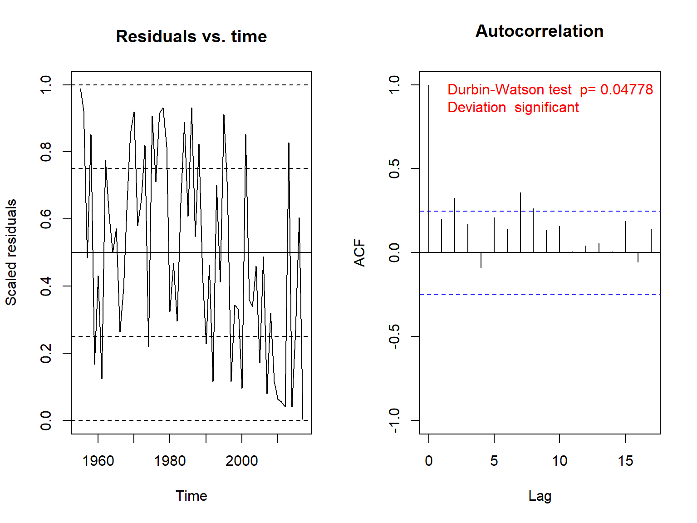
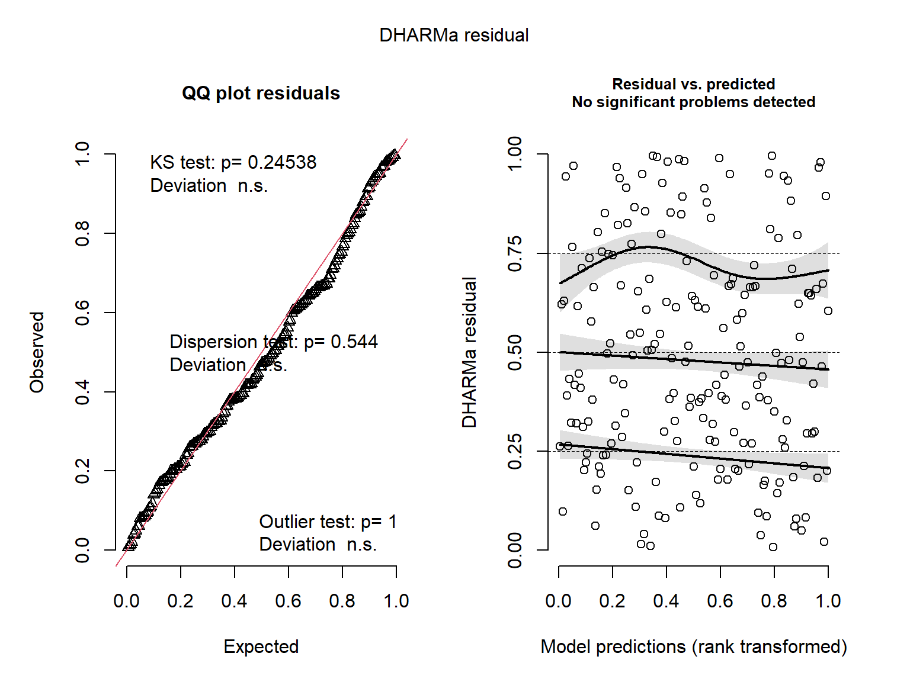

Mixed-effects models: advanced topics
Radchuk Viktoriia
2022-1-5
More complex random structures
Ecological data are often characterized by autocorrelation, either
temporal or spatial (or both).
Another commonly encountered structure is that levels of some factor are
nested within those of the other, i.e. hierarchical model structures.
For example, we sample species richness in 5 randomly selected plots at
7 different kettle holes. The plots are nested within the kettle
holes.
Temporal autocorrelation
- Manifests itself in residuals.
- Can be detected with Autocorrelation Function (ACF)
or with formal tests (e.g. Durbin-Watson test).
- If present, have to be accounted for, for example by including the autocorrelation structure of first order (AR1) in the residual variance.
Let us do it!
We use the data on relation between temperature and phenology, as we have already detected some issues with temporal autocorrelation there.
dat <- read.csv(file = here::here('data', 'dat_phen_temp_subs.csv'))
dat_fac <- dat %>%
mutate_if(is.character, as.factor) %>%
mutate(ID = as.factor(ID))
str(dat_fac)## 'data.frame': 750 obs. of 20 variables:
## $ ID : Factor w/ 25 levels "1","21","22",..: 1 1 1 1 1 1 1 1 1 1 ...
## $ Year : int 1953 1954 1955 1956 1957 1959 1960 1961 1962 1963 ...
## $ Study_Authors : Factor w/ 13 levels "Ahola_et_al",..: 1 1 1 1 1 1 1 1 1 1 ...
## $ Journal : Factor w/ 7 levels "Behavioural Ecology & Sociobiology",..: 4 4 4 4 4 4 4 4 4 4 ...
## $ Year_pub : int 2009 2009 2009 2009 2009 2009 2009 2009 2009 2009 ...
## $ Title : Factor w/ 8 levels "Bergmann?s rule and climate change revisited: Disentangling environmental and genetic responses in a wild bird population",..: 3 3 3 3 3 3 3 3 3 3 ...
## $ Species : Factor w/ 7 levels "Cyanistes caeruleus",..: 4 4 4 4 4 4 4 4 4 4 ...
## $ Taxon : Factor w/ 1 level "Bird": 1 1 1 1 1 1 1 1 1 1 ...
## $ Location : Factor w/ 17 levels "Askainen","Boshoek, Antwerp",..: 1 1 1 1 1 1 1 1 1 1 ...
## $ Longitude : num 21.8 21.8 21.8 21.8 21.8 ...
## $ Latitude : num 60.6 60.6 60.6 60.6 60.6 ...
## $ Country : Factor w/ 12 levels "Belgium","Canada",..: 4 4 4 4 4 4 4 4 4 4 ...
## $ Trait : Factor w/ 4 levels "ArrivalDate",..: 3 3 3 3 3 3 3 3 3 3 ...
## $ Trait_Categ_det: Factor w/ 2 levels "Arrival_Date",..: 2 2 2 2 2 2 2 2 2 2 ...
## $ Trait_Categ : Factor w/ 1 level "Phenological": 1 1 1 1 1 1 1 1 1 1 ...
## $ Trait_mean : num -1.444 -0.296 1.411 0.587 1.21 ...
## $ Trait_SE : num 0.166 0.0842 0.2379 0.2411 0.2762 ...
## $ Clim : num 3.426 1.296 -1.191 -0.631 0.757 ...
## $ det_Clim : num 1.585 -0.222 -2.323 -1.903 -0.8 ...
## $ det_Clim2 : num 2.5111 0.0491 5.3941 3.6229 0.6402 ...Fit the model with random slope
mod <- fitme(Trait_mean ~ det_Clim + (1 + det_Clim|Species), data = dat_fac, method = 'REML')
summary(mod)## formula: Trait_mean ~ det_Clim + (1 + det_Clim | Species)
## REML: Estimation of ranCoefs and phi by REML.
## Estimation of fixed effects by ML.
## Estimation of phi by 'outer' REML, maximizing restricted logL.
## family: gaussian( link = identity )
## ------------ Fixed effects (beta) ------------
## Estimate Cond. SE t-value
## (Intercept) 3.561e-16 0.02674 1.332e-14
## det_Clim -2.025e-01 0.20826 -9.722e-01
## --------------- Random effects ---------------
## Family: gaussian( link = identity )
## --- Random-coefficients Cov matrices:
## Group Term Var. Corr.
## Species (Intercept) 5.362e-09
## Species det_Clim 0.291 -1.516e-29
## # of obs: 750; # of groups: Species, 7
## -------------- Residual variance ------------
## phi estimate was 0.53617
## ------------- Likelihood values -------------
## logLik
## logL (p_v(h)): -841.9937
## Re.logL (p_b,v(h)): -845.3465Model diagnositcs with DHARMa

Test of autocorrelation
We test autocorrelation per study. Let’s look at study 21.
sim_1 <- recalculateResiduals(sim, sel = dat_fac$ID == 21)
testTemporalAutocorrelation(sim_1, time = dat_fac$Year[dat_fac$ID == 21])
##
## Durbin-Watson test
##
## data: simulationOutput$scaledResiduals ~ 1
## DW = 1.511, p-value = 0.04778
## alternative hypothesis: true autocorrelation is not 0Fit the model with AR1 structure
spaMM_AR1 <- fitme(Trait_mean ~ det_Clim + (1 + det_Clim|Species) + AR1(1|Year), data = dat_fac, method = 'REML')
summary(spaMM_AR1)## formula: Trait_mean ~ det_Clim + (1 + det_Clim | Species) + AR1(1 | Year)
## REML: Estimation of lambda, corrPars, ranCoefs and phi by REML.
## Estimation of fixed effects by ML.
## Estimation of phi by 'outer' REML, maximizing restricted logL.
## family: gaussian( link = identity )
## ------------ Fixed effects (beta) ------------
## Estimate Cond. SE t-value
## (Intercept) 0.1348 0.1180 1.1429
## det_Clim -0.1914 0.2042 -0.9373
## --------------- Random effects ---------------
## Family: gaussian( link = identity )
## --- Correlation parameters:
## 2.ARphi
## 0.7604053
## --- Random-coefficients Cov matrices:
## Group Term Var. Corr.
## Species (Intercept) 0.005561
## Species det_Clim 0.2803 0.8261
## --- Variance parameters ('lambda'):
## lambda = var(u) for u ~ Gaussian;
## Year : 0.1143
## --- Coefficients for log(lambda):
## Group Term Estimate Cond.SE
## Year (Intercept) -2.169 0.2558
## # of obs: 750; # of groups: Species, 7; Year, 67
## -------------- Residual variance ------------
## phi estimate was 0.458307
## ------------- Likelihood values -------------
## logLik
## logL (p_v(h)): -813.0338
## Re.logL (p_b,v(h)): -814.9412 The output now also contains the
estimate of autocorrelation \(\phi\) in
residuals, which is rather high, 0.76.
We also see the estimate of the variation due to the Year effect.
The model with AR1 structure
- Notice that residual variance \(\phi\) declines compared to the model
without AR1 structure.
- Important: by using syntax
AR1(1|Year)we are assuming that autocorrelation is the same in each study. Ideally we should fit autocorrelation per study (since studies performed on different species / in different locations). To do it we use the syntaxAR1(ID|Year).
- Try fitting it. What do you get?
Syntax with glmmTMB
dat_fac$Year_fac <- as.factor(dat_fac$Year)
TMB_AR1 <- glmmTMB(Trait_mean ~ det_Clim + (1 + det_Clim |Species) + ar1(Year_fac - 1 | ID), data=dat_fac,
control=glmmTMBControl(optimizer=optim,
optArgs=list(method="BFGS")))## Warning in fitTMB(TMBStruc): Model convergence problem; non-positive-definite
## Hessian matrix. See vignette('troubleshooting')

AR1 structure with glmmTMB
## Family: gaussian ( identity )
## Formula:
## Trait_mean ~ det_Clim + (1 + det_Clim | Species) + ar1(Year_fac - 1 | ID)
## Data: dat_fac
##
## AIC BIC logLik deviance df.resid
## NA NA NA NA 742
##
## Random effects:
##
## Conditional model:
## Groups Name Variance Std.Dev. Corr
## Species (Intercept) 9.887e-07 0.0009943
## det_Clim 2.460e-01 0.4959816 0.94
## ID Year_fac1953 1.407e-01 0.3751216 0.90 (ar1) 0.90 (ar1)
## Residual 4.024e-01 0.6343124
## Number of obs: 750, groups: Species, 7; ID, 25
##
## Dispersion estimate for gaussian family (sigma^2): 0.402
##
## Conditional model:
## Estimate Std. Error z value Pr(>|z|)
## (Intercept) -0.01798 0.05504 -0.327 0.744
## det_Clim -0.20285 0.19169 -1.058 0.290Do you recall what were the signs of singular fit in mixed-effects models?
Model convergence problem
For more details see here: Troubleshoot
glmmTMB
In this particular case the problem is too few levels of grouping
variable (7 species)
Model diagnostics: spaMM
 Important: if you would test for residual
autocorrelation, the result will still be the same as before. You need
to simulate the residuals in a different way (conditional on the fitted
correlated random effects to properly assess autocorrelation in
residuals after including autocorrelation structure in your
model)
Important: if you would test for residual
autocorrelation, the result will still be the same as before. You need
to simulate the residuals in a different way (conditional on the fitted
correlated random effects to properly assess autocorrelation in
residuals after including autocorrelation structure in your
model)
AIC and AICc
- \(AIC = -2\times ln(L) +
2\times k\)
where L is the maximum likelihood estimate of the model,
and k is the number of fitted parameters.
- AIC was formulated by Hirotugu Akaike, a Japanese
statistician.
- A correction for small sample sizes: AICc \(AIC{c} = AIC + \dfrac{2 \times k \times (k +1)}{n
- k - 1}\)
where n is the sample size.
- ‘Small sizes’ are often defined as rule of thumb
when \(\dfrac{n}k < 40\).
- Since AICc approximates AIC at large sample sizes, it is recommended to always use AICc.
Model selection: why?
- There is a difference in philosophy behind
model selection based on AIC and classical
hypothesis testing.
- Model selection aims to detect the
‘best model’ and is often used as means of generating hypotheses (rather
exploratory analyses) or for making predictions.
- Hypothesis testing is used for
inference and testing specific a-priori formulated hypotheses.
- That is not to say that there are no hypotheses formulated when doing model selection, but these are not about the direction of impact of one predictor on the response variable but rather about the best group of predictors explaining the response variable.
Model selection: when?
Generally it is often used in observational studies, where no
experiments can be set up to test a specific hypothesis. Such
observational studies often have many covariates affecting the response
variable.
A specific field where model selection is often applied in habitat
suitability analyses.
Model selection: how?
- AIC can be used to compare diverse models (no
constraints on models being nested within each other, as with LRT), as
long as they are fitted to EXACTLY the same data
set.
- AIC(c) of models are compared. The model that is supported by the data best is the one with the minimum AIC(c) given it is far away from other models in terms of their AIC(c). This distance to the ‘next-best’ model is defined as \(\Delta AIC\).
Model selection: how?
- \(\Delta AIC\)
should be around 7-8 to consider that models differ in their support of
the data. Though a \(\Delta AIC\)
threshold of 2 is often used in ecological literature, its origin is
unclear, see e.g. Burnham et al. (2011).
- If \(\Delta AIC\) between models is < 7 then parsimony rule is typically applied to select the ‘best’ model, i.e. chosing the model among the candidate set that has the least parameters.
Model selection example
A hypothetical example
| Model | AIC | \(\Delta AIC\) |
|---|---|---|
| Temp + Temp2 + Precip + Precip2 + Year | 230 | 0 |
| Temp + Temp2 + Precip + Year | 208 | 22 |
| Temp + Temp2 + Precip + LandUse | 206 | 24 |
| Temp + Precip + LandUse | 205.3 | 24.7 |
Model selection: potential misuse
Some packages like MuMin make it all automatic but have to be applied
thoughtfully.
From Burnham & Anderson (2002): “Careful,
a priori consideration of alternative models will often require a major
change in emphasis among many people.[…] This a priori strategy is in
contrast to strategies advocated by others who view modeling and data
analysis as a highly iterative and interactive exercise. Such a
strategy, to us, represents deliberate data dredging and should be
reserved for early exploratory phases of initial investigation. Such an
exploratory avenue is not the subject of this book.”
Multimodel inference: Model averaging, weighting etc
- Often there is no single model that is strongly
supported by the data and is much better than the rest of the candidate
models.
- If data support for several models is very similar,
model averaging is one approach to obtain the estimates for the
parameters across those models.
- BUT: this is a topic on its own.
Beyond normality: Generalised Linear Mixed-Effects Models
- We so far talked about Linear Mixed-Effects models,
in which the process follows normal distribution.
- There are many cases where variables are not
following normal distribution.
Generalised Linear Mixed-Effects Models
Three components of a generalised linear model:
- the distribution of the response variable,
- specification of the systematic component in terms
of explanatory variables,
- the link function, used to described the relation between the mean of the response variable and the systematic part.
Distributions
- Normal distribution
- Poisson distribution
- Negative Binomial
distribution
- Binomial distribution
- Gamma
distribution
- Zero-inflated Poisson
distribution
- Zero-inflated negative
binomial distribution
- …
Which distribution to use?
| Distribution | Data type | Example |
|---|---|---|
| Normal | Continuous; \((-\infty, \infty)\) | Height, temperature, weight |
| Poisson | Counts; \(\geq 0, integer\) | Number of offspring |
| Negative Binomial | Overdispersed counts; \(\geq 0, integer\) | Number of offspring, many 0s |
| Binomial | Proportional data, presence/absence | alive/dead, female/male |
| Gamma | Continuous; \([0, \infty)\) | Height, length |
| Zero-inflated Poisson | Overdispersed counts; \(\geq 0, integer\) | Number of offspring, many 0s |
Specification of the systematic component
Predictors affect a response variable via a linear predictor: \[\eta =beta_0 + \beta_1 \times x_1 + \beta_2 \times x_2 + ... + \beta_p \times x_p \]
Link function
Link function (g) specifies the function relating the linear
predictor \(\eta\) and the expected
value of \(Y\), that is mean response
\(\mu\)
\[\eta = g(\mu)\]
Poisson
link is log
- \(Y\) is
Poisson-distributed with mean \(\mu\)
\(Y \sim P(\mu)\); \(E(Y) = \mu\) and \(var(Y) = \mu\)
- Systematic part:
\[\eta = beta_0 + \beta_1 \times x_1 + ... + \beta_p \times x_p\]
- Logarithmic link is used between the mean of Y and
the predictor \(\eta\):
\(log(\mu) = \eta\)
Then \(\mu = \exp(\eta)\), because exp() is an inverse of log().
Binomial
link is logit (though others are also possible, e.g. probit, log-log)
- \(Y\) is
Binomial-distributed with probability \(\pi\) and \(n\) independent trials.
- Systematic part:
\(\eta =beta_0 + \beta_1 \times x_1 + ... + \beta_p \times x_p\)
- logit link is used between the mean of Y and the
predictor \(\eta\):
\(logit(\pi) = \eta\)
With some mathematics it follows that \(\pi = \frac{exp(beta_0 + \beta_1 \times x_1 + ... + \beta_p \times x_p)}{1+exp(beta_0 + \beta_1 \times x_1 + ... + \beta_p \times x_p)}\).
Let’s fit a GLMM in R!
We simulate the data for offspring produced by different species of mammals. We have sampled offspring in 10 different species, recording the number of offspring for 20 individuals per species. Number of offspring is simulated to be negatively affected by temperature (x).
set.seed(6)
dat_off <- SimulateMix(intercept = 0, slope = -0.6, n = 200, group.nb = 10,
var.group = 0.1, var.error = 0.05, times.perGroup = 20)
head(dat_off)## intercept slope x group b error lambda y
## 1 0 -0.6 0.5392120 group_1 0.4497119 -0.08939905 1.0374706 0
## 11 0 -0.6 3.4557022 group_1 0.4497119 -0.09429525 0.1794238 0
## 21 0 -0.6 1.0374980 group_1 0.4497119 0.01154542 0.8510865 0
## 31 0 -0.6 -1.3429188 group_1 0.4497119 -0.67779802 1.7818731 3
## 41 0 -0.6 -1.7703283 group_1 0.4497119 -0.12605833 3.9982249 5
## 51 0 -0.6 -0.1082674 group_1 0.4497119 -0.05348100 1.5859622 1Histogram of offspring number
hist(dat_off$y, xlab = 'Number of offspring', col = 'black', main = NULL)
abline(v = mean(dat_off$y), col = 'red', lwd = 2)
Poisson GLMM
We use function glmer() from the library
lme4.
modPois <- glmer(y ~ x + (1|group), data = dat_off, family = poisson(link = 'log'))
summary(modPois)## Generalized linear mixed model fit by maximum likelihood (Laplace
## Approximation) [glmerMod]
## Family: poisson ( log )
## Formula: y ~ x + (1 | group)
## Data: dat_off
##
## AIC BIC logLik deviance df.resid
## 550.9 560.8 -272.4 544.9 197
##
## Scaled residuals:
## Min 1Q Median 3Q Max
## -1.5007 -0.6743 -0.3463 0.4943 3.5916
##
## Random effects:
## Groups Name Variance Std.Dev.
## group (Intercept) 0.1477 0.3843
## Number of obs: 200, groups: group, 10
##
## Fixed effects:
## Estimate Std. Error z value Pr(>|z|)
## (Intercept) -0.2233 0.1515 -1.474 0.141
## x -0.6602 0.0333 -19.823 <2e-16 ***
## ---
## Signif. codes: 0 '***' 0.001 '**' 0.01 '*' 0.05 '.' 0.1 ' ' 1
##
## Correlation of Fixed Effects:
## (Intr)
## x 0.473How do you interpret these results?
Model diagnostics
 How do you interpret such results of model diagnostics?
But remember: reality can be ugly
Overdispersion
- occurs if variation in the data is greater than
would be expected under a given model.
- often arises because some distributions have too
few parameters to accommodate for the variability in observations. For
example, in Poisson the variance = mean, constraining the variance in
the model, which may not be the case in the data.
- Overdispersion = Resid. Deviance / df.
- Normally this ratio should be ~ 1, if it is >> 1 we talk about overdispersion.
Formal tests of overdispersion

##
## DHARMa nonparametric dispersion test via sd of residuals fitted vs.
## simulated
##
## data: simulationOutput
## dispersion = 1.0825, p-value = 0.544
## alternative hypothesis: two.sidedML and Optimization
In order to find the parameter values that maximize the model likelihood optimizers are used. There are several of them. And the ones that are used by default may differ between the packages. Main optimizers used in R:
- Nelder-Mead: a direct search algorithm, can be very
slow, but often is very reliable.
- BFGS: a Quasi-Newton (Hessian-based)
algorithm.
- L-BFGS-B: Limited memory-BFGS-Box constraint.
- nlminb: a Quasi-Newton (Hessian-based) algorithm
that supports box constraints.
- bobyqa: Bound Optimization by Quadratic Approximation, a quadratic approximation algorithm that supports box constraints.
More on optimizers
- No single best optimizer exists.
Possible reasons why an optimizer fails:
- iterations can reach a singular gradient and will
stop
- iterations can exceed the maximum number of iterations without converging (can be dealt with my increasing the number of iterations)
- at least one of the variances is negative
- covariance matrix is not positive definite.
For more information seelmerControl().
Checking up
- What if you have underdispersion?
- How to deal with overdispersion?
Questions?
Literature
- Zuur AF, Ieno EN, Walker N, Saveliev AA, Smith GM
2009. Mixed-Effects Models and Extensions in Ecology with R. New York,
Springer New York: XXII, 574 p.
- Bolker BM, Brooks ME, Clark CJ, Geange SW, Poulsen
JR, Stevens MHH, White J-SS (2008) Generalized linear mixed models: a
practical guide for ecology and evolution. Trends in Ecology and
Evolution, 24:3.
- Burnham KP, Anderson DR, Huyvaert KP (2011) AIC
model selection and multimodel inference in behavioral ecology: some
background, observations, and comparisons. Behavioural Ecology and
Sociobiology, 65:23–35.
- Burnham KP & Anderson DR (2002) Model Selection
and Multimodel Inference: a practical information-theoretic approach.
2nd Ed, New York, Springer-Verlag: 515 p.
- Anderson DR (2008) Model based inference in the
life sciences: a primer on evidence. Springer, New York: 184 p.
- Faraway JJ (2006) Extending the Linear Model with
R: Generalized Linear, Mixed Effects and Nonparametric Regression Models
Chapman and Hall, New York, 345 p.
- Tredennik AT, Hooker G, Ellner SP, Adler PB (2021) A practical guide to selecting models for exploration, inference, and prediction in ecology. Ecology, 0:e03336.